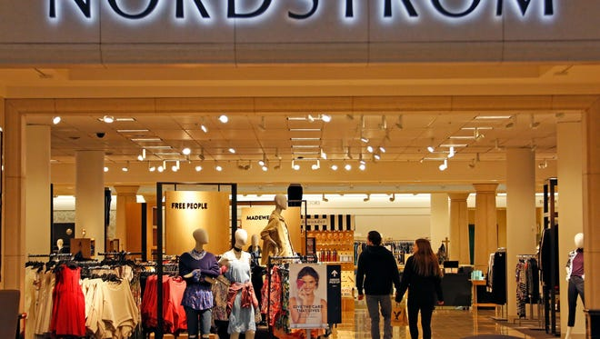
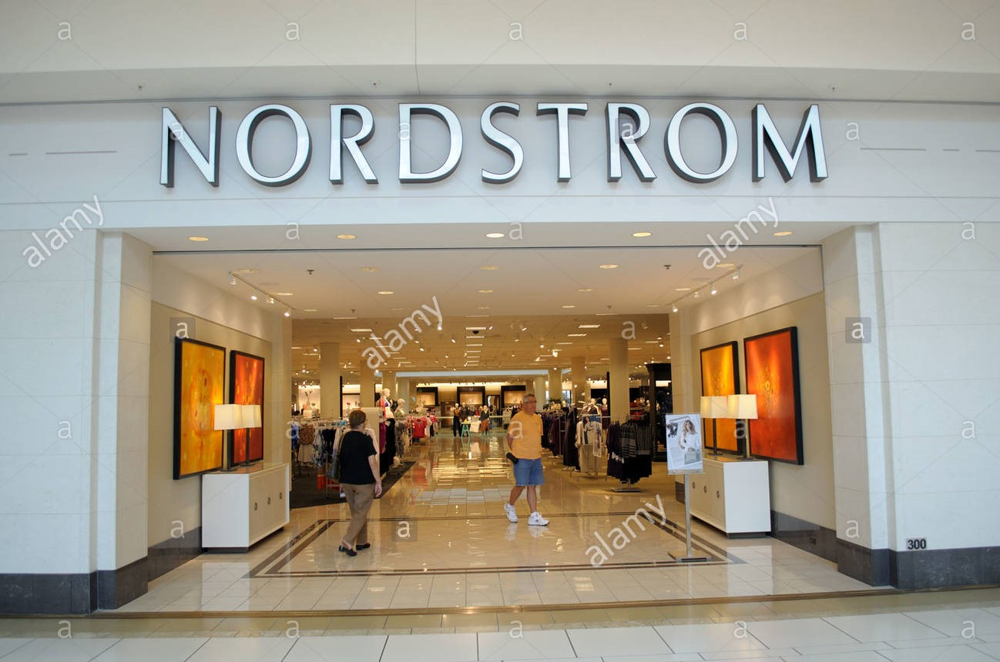

Nordstrom Clothing
 
Nordstrom, Inc. is an American luxury department store chain. Founded in 1901 by John W. ... Wallin, it originated as a shoe store and evolved into a full-line retailer with departments for clothing, footwear, handbags, jewelry, accessories, cosmetics, and fragrances.
Formerly: Wallin & Nordstrom (1901–1967); Nordstrom Best (1967–1973)
Founded:1901; 120 years ago
Founders:John W. Nordstrom; Carl F. Wallin
Products: Clothing; footwear; handbags; jewelry; accessories; cosmetics; fragrance; home; furnishings; wedding
Subsidiaries:HauteLook; Nordstrom Rack; Trunk Club; Jeffrey Boutique